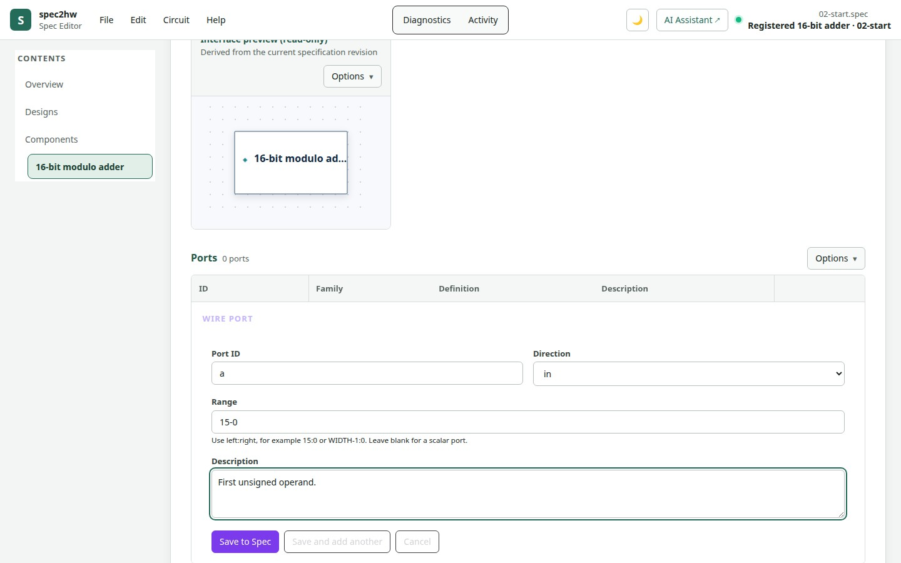
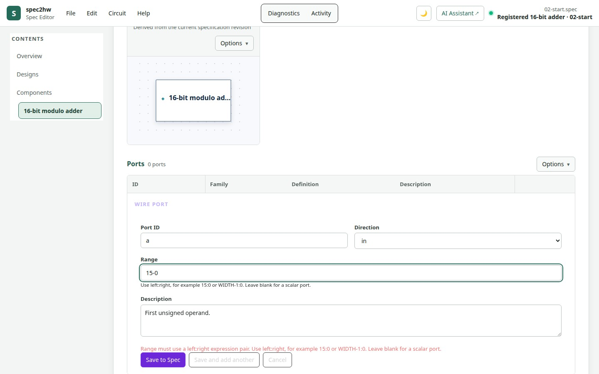
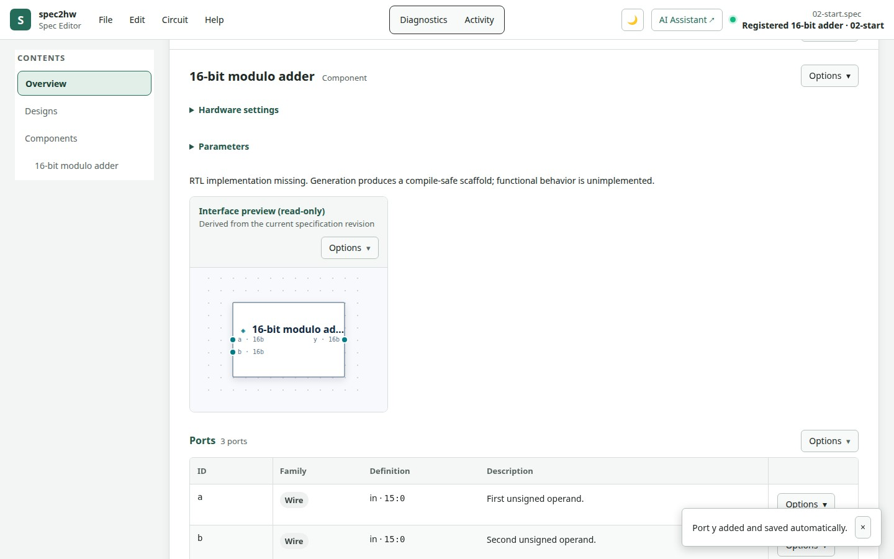

CORE 02 / 09 · GUIDED PRACTICE
Define a Component and its ports
Save a complete interface for a 16-bit adder.
Before you start
Spec Editor. Continue with your empty Spec or open the prepared start.
Read each action, do it, then compare the expected result before continuing. Use a fresh prepared start to retry. Reading time and automated execution time are not measured learner practice time.
Actions
Create the definition
Open02-start.specor your empty Spec. In Components select Options → Add component…. Enter 16-bit modulo adder, then select Create component.Expected result: One reusable Component definition appears. It is not yet an instance in a Design.
Save its explanation
On that Component select Options → Edit text…. Enter the explanation below and select Save to Spec.Produce y = (a + b) modulo 65536. This Component is combinational. It has no clock, reset, or carry output. The Ports and SystemVerilog sections define the interface and behavior.Expected result: The saved explanation describes unsigned addition and modulo wraparound.
Open a port draft
In the Ports heading, open Options → Add port. Component Options also offers Add wire port.Expected result: An inline draft shows Port ID, Direction, Range, and Description.

An inline wire-port draft keeps its own Save to Spec control. Select the image to view its full size. Enter the first input
Enter Port IDa, Directionin, Range15-0, and the first description in the table.Port ID Direction Range Description a in 15:0 First unsigned operand. b in 15:0 Second unsigned operand. y out 15:0 Unsigned sum, modulo 65536. Expected result: All draft fields remain editable. The Range is intentionally invalid.
Check format validation
Select Save and add another. Read the Range error.Expected result: Range receives focus, the draft remains, and no port is saved. A range needs explicit left:right bounds.

An invalid 15-0 Range keeps the full draft and focuses the error. Select the image to view its full size. Correct and save input a
Replace the Range with15:0. Select Save and add another.Expected result: Input a appears in the saved table. A fresh draft is ready for the next port.
Save input b
Enterb, Directionin, Range15:0, and its description. Select Save and add another.Expected result: The table contains inputs a and b. The new draft is empty.
Save output y
Entery, Directionout, Range15:0, and its description. Select Save to Spec.Expected result: The draft closes. Exactly three 16-bit wire ports are saved.

The saved adder has inputs a and b and output y. Select the image to view its full size. Edit a saved row
In port a’s Options select Edit. Improve its description without changing its ID, direction, or range, then Save to Spec.Expected result: Only the intended description changes.
Try Duplicate safely
In port a’s Options select Duplicate. Inspect the suggested unused ID and copied fields, then select Cancel.Expected result: No fourth port is saved. Duplicate uses the same validation rules as Add and Edit.
Understand scalar ranges
A blank Range is a scalar.0:0is an indexed one-bit vector.15:15keeps explicit identical bounds. Optional outer brackets such as[15:0]are removed on save; standalone15orWIDTH-1is rejected.Expected result: You can choose a scalar or indexed vector deliberately. Format checks do not resolve parameter expressions.
Reopen and compare
Use File → Open Spec to reopen the same path. Compare all three saved rows and the explanation.Expected result: The interface persists. No clock, reset, or SystemVerilog was added yet.


Check your result
There is one Component, exactly three 16-bit wire ports, and a saved explanation. No clock or reset was added.
Try it yourself
Edit the description of port a to “First unsigned 16-bit operand.” Save it without changing its range.
If it fails
If a port range is rejected, use explicit 15:0 bounds; optional outer brackets are accepted. A range of 0:0 is an indexed one-bit vector; a blank range is scalar.
Continue
NEXT GUIDEAdd hardware behaviorReference: spec editor · Complete example